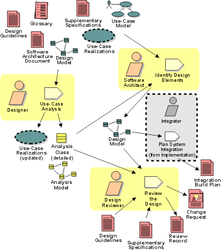

Disciplines >
Disciplines >
 Analysis & Design >
Analysis & Design >
 Workflow >
Analyze Behavior
Workflow >
Analyze Behavior
Disciplines >
Analysis & Design >
Workflow >
Analyze Behavior
Workflow Detail:
|
Topics |
 |
The purpose of this workflow detail is to:
The Activity: Use-Case Analysis is best conducted by a small group with a blend of skills; staffing guidelines are presented in Work Guidelines: Use-Case Analysis Workshop. The Activity: Identify Design Elements requires a broader perspective of the architecture and the results of other use-case analysis workshops, and requires some experience in the implementation technology and any frameworks being used on the project. Reviews should be staffed with people who have both in-depth knowledge of the implementation technologies as well as an understanding of the problem domain.
A number of use-case analysis workshops may be organized in parallel, limited only by the available resource pool and the skills of the participants. As soon as possible following each use-case analysis workshop, some members of the workshop and some members of the architecture team should work to merge the results of the workshop in the Activity: Identify Design Elements. Members of both teams are essential: the use-case analysis team members understand the context in which the analysis classes were identified, while the architecture team understands the greater context of the design as well as other use cases which have already been identified.
As the design work matures and stabilizes, increasingly larger parts of it
can and should be reviewed. Smaller, more focused reviews are better than large
all-encompassing reviews; sixteen two-hour reviews focused on very specific
aspects are significantly better than a single review spanning two days. In the
focused reviews, define objectives to bound the focus of the review, and ensure
that a small review team with the right skills for the review, given the
objectives, is available for the review. Early reviews should focus primarily on
the integrity of layering and packaging in the design, the stability and quality
of the interfaces, and the completeness of coverage of the use case behavior.
Later reviews should drill down into packages and subsystems to ensure that
their contents completely and correctly realize their defined interfaces, and
that the dependencies and associations between design elements are necessary,
sufficient and correct. See the check-points on each design artifacts for
specific review points.
|
Rational Unified
Process
|